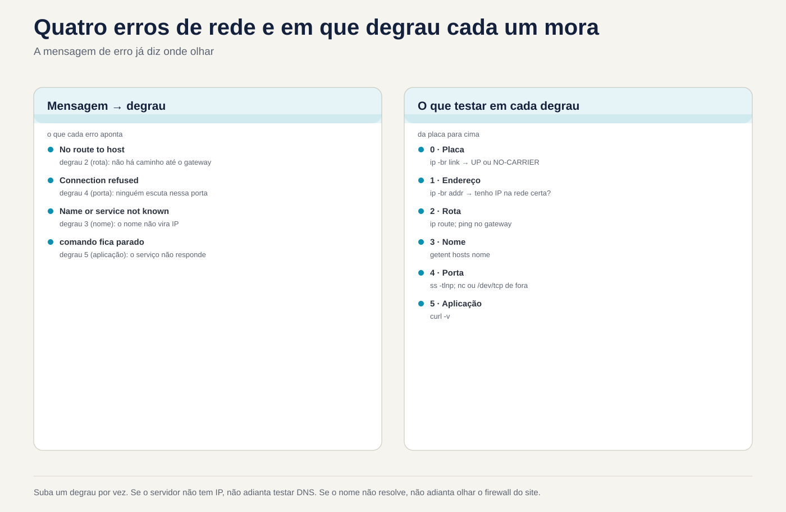

Lezione 2.4 · La rete nella vita quotidiana
Quarta lezione del Modulo 2. La chiamata arriva in tre modi: "internet non funziona", "il sistema non si apre" e "il server è scomparso dalla rete". Non è quasi mai quello che dice il cliente. Un nome che non funziona sembra che Internet non funzioni più. Un servizio che ascolta solo sulla macchina stessa sembra un server inattivo. Un IP pratico sembra funzionare fino al prossimo avvio. Oggi imposti una scala a sei gradini e sali sempre nello stesso ordine: insegna, indirizzo, percorso, nome, porta, domanda. Il primo passo che fallisce è il problema. Alla fine, leggi un messaggio di errore di rete e sai già quale passaggio esaminare.
| File | lezione 2.4 |
|---|---|
| Modulo | M2 · Sistema, utenti e permessi, lezione 4 di 8 |
| Quando | Settimana 5 |
| Alla fine puoi | Leggere la configurazione di rete di qualsiasi server con ip, hostnamectl e /etc/resolv.conf; diagnosticare "nessuna rete" passo dopo passo; vedere chi ascolta su quale porta e a quale indirizzo con ss; testare una porta su un'altra macchina senza installare nulla; spiegare la differenza tra getent e dig; modificare l'indirizzo temporaneamente con ip e permanentemente con nmcli; leggere cosa dice ciascun messaggio di errore sul passaggio non riuscito |
| Articoli di prova | LE 014.4 (il computer sulla rete: IP, maschera, gateway, DNS, ip, ping, ss) · LPIC-1 109.2 (configurazione di rete persistente) · LPIC-1 109.3 (risoluzione dei problemi di rete di base) · LPIC-1 109.4 (DNS lato client) · RHCSA (configurare indirizzi IPv4 e IPv6; configurare la risoluzione dei nomi; nome host) |
| Prerequisiti | lezione 2.3 (processi, PID; journalctl); lezioni 1.5 e 1.6 (grep, awk semplici, tubi) |
| Tempo | Circa 2h |
| Istantanee | m2a4-start e m2a4-end in entrambe le VM |
1 · Riscaldamento
Tre domande, appena mi vengono in mente. Scrivi le risposte; la chiave di risposta viene visualizzata alla fine.
- Su Windows
ipconfig /allmostra indirizzo, maschera, gateway e DNS in un'unica schermata. Indovina: in Linux esiste un comando che li mostra tutti e quattro insieme? ping 1.1.1.1risponde, ma il browser dice "server non trovato". Indovina: cosa c'è di rotto?- Si cambia l'IP di un server con un comando, lo si prova e funziona. Indovina: dopo il prossimo avvio, si continua con il nuovo IP?
2 · Perché è importante
La rete è l'argomento su cui il tecnico fa più ipotesi. Riavvia il servizio, riavvia il router, riavvia il server e talvolta ritorna, senza che nessuno sappia il motivo. Il problema si ripresenta la settimana successiva. Chi risolve veramente i problemi non conosce più i protocolli: ha un ordine e non salta passaggi. Se il server non ha un IP, non ha senso testare il DNS. Se il nome non funziona, è inutile guardare il firewall del sito.
La seconda cosa che differenzia il professionista è leggere l'intero messaggio di errore. "Connessione rifiutata", "Nessun percorso verso l'host", "Nome o servizio sconosciuto" e un comando che semplicemente si interrompe sono quattro problemi diversi, in quattro passaggi diversi. Il messaggio ti dice già dove cercare; quasi nessuno lo legge.
E c'è la trappola temporanea. Il comando ip cambia la rete al volo e ciò che cambia scompare all'avvio. Il tecnico risolve di notte con ip, domenica il server si riavvia per un aggiornamento e lunedì mattina è di nuovo tutto rotto. Oggi impari la differenza tra ciò che è valido adesso e ciò che è registrato, e a controllare entrambe le cose.
3 · Modello mentale
La rete è una scala. Sali dal basso verso l'alto, un passo alla volta. La prima cosa che fallisce è il problema; di conseguenza, quelle sopra indicate falliscono.
5 Aplicação curl -v, o próprio programa "o serviço responde direito?"
4 Porta ss -tlnp (no servidor) "alguém escuta? em que endereço?"
/dev/tcp ou nc (de fora) "consigo chegar até a porta?"
3 Nome getent hosts nome "o nome vira IP?"
2 Rota ip route; ping no gateway "sei sair da minha rede?"
1 Endereço ip -br addr "tenho IP? na rede certa?"
0 Placa ip -br link "a placa existe e está UP?"Quattro idee guidano la lezione:
| Idea | Cosa intendi | Conseguenza |
|---|---|---|
| Scala | Ogni passaggio dipende da quelli seguenti | Un DNS "in uscita" potrebbe essere un percorso sbagliato; prova dal basso verso l'alto |
| Ora × registrato | Il kernel memorizza la configurazione che è valida adesso; NetworkManager (o ifupdown) salva ciò che ritorna all'avvio | ip cambia solo l'adesso; nmcli con mod cambia solo ciò che viene registrato, finché non si applica |
| Il nome ha ordine | Il sistema cerca un nome prima in /etc/hosts e poi nel DNS, nell'ordine /etc/nsswitch.conf | getent mostra cosa vedono i programmi; dig chiede solo DNS |
| L'ascolto ha un indirizzo | Un servizio è in ascolto su una porta e su un indirizzo: 127.0.0.1 solo per la macchina stessa, 0.0.0.0 per tutte le interfacce | Non basta “la porta è aperta”: aperta a chi? |

4 · Concetto a strati
Essenziale
Chi sono sulla rete. Quattro comandi rispondono a tutto ipconfig /all risponde:
hostnamectl # il nome della macchina, del sistema, se si tratta di una VM
ip -br link # le targhe: nome, stato (UP/DOWN), MAC
ip -br addr # le targhe con gli indirizzi, una per riga
ip route # i percorsi; la linea "default via" è il gateway
cat /etc/resolv.conf # i server DNS ("nameserver") e il dominio di ricercaO -br (breve) lascia una riga per piatto. Senza di esso, ip addr mostra tutto, compreso IPv6, data di scadenza e flag. Usa quello corto per guardare e quello lungo quando hai bisogno di dettagli.
$ ip -br addr
lo UNKNOWN 127.0.0.1/8 ::1/128
enp6s18 UP 10.1.0.51/24 fe80::be24:11ff:fe2a:51/64| Pezzo | Voglio dire |
|---|---|
enp6s18 | Il nome della scheda: en = Ethernet, p6s18 = dove si trova sul bus. I vecchi nomi erano eth0 |
UP | La scheda è accesa e ha un segnale. DOWN = spento; NO-CARRIER (in ip link) = connesso, senza cavo o senza segnale |
10.1.0.51/24 | L'indirizzo e la maschera in notazione breve: /24 = 255.255.255.0, la rete va da 10.1.0.0 a 10.1.0.255 |
fe80::.../64 | L'indirizzo IPv6 link-local, che ogni carta crea da sola; valido solo all'interno della rete locale |
lo | L'interfaccia loopback: la macchina parla con se stessa, sempre 127.0.0.1 |
Verifica se arriva. ping invia pacchetti ICMP e attende una risposta. Sempre con -c, altrimenti non si ferma:
ping -c 3 10.1.0.52 # 3 pacchetti e perUn ping che risponde dimostra che i passi da 0 a 2 funzionano fino a quell'indirizzo. Un ping che non risponde non dimostra che la macchina è fuori uso: molti firewall bloccano ICMP. Nessuna risposta, vai su port test.
Chi ascolta. ss mostra le connessioni e le porte aperte:
sudo ss -tulpn # t=TCP u=UDP l=ascolto p=processo n=numeri (nessuna traduzione)
ss -tn # Connessioni TCP stabilite oraNetid State Local Address:Port Peer Address:Port Process
tcp LISTEN 0.0.0.0:22 0.0.0.0:* users:(("sshd",pid=812,fd=3))
tcp LISTEN [::]:22 [::]:* users:(("sshd",pid=812,fd=4))
udp UNCONN 127.0.0.1:323 0.0.0.0:* users:(("chronyd",pid=701,fd=5))La colonna che conta è Indirizzo locale. 0.0.0.0:22 e [::]:22: SSH ascolta su tutti gli indirizzi IPv4 e IPv6 raggiungibili da chiunque. 127.0.0.1:323: chronyd ascolta solo la macchina stessa; da fuori non arriva nessuno. Senza sudo, la colonna Processo è vuota per i processi di altri utenti.
Trova un nome. getent hosts chiede nello stesso modo in cui chiedono i programmi:
getent hosts rockylinux.org
getent hosts localhostSe getent non risponde, nessun programma sarà in grado di utilizzare quel nome.
Intermedio
nmcli, NetworkManager tramite riga di comando. In Rocky, chi mantiene la configurazione di rete è NetworkManager. Funziona con connessioni (profili registrati) applicati a dispositivi (schede):
nmcli device status # le piastre e la connessione applicata a ciascuna
nmcli connection show # i profili; le risorse hanno DEVICE popolato
nmcli connection show "NOME" | grep ipv4 # cosa dice il profilo su IPv4Il nome della connessione non è sempre il nome della scheda: può essere enp6s18, System enp6s18 o Wired connection 1. Scoprilo prima di modificare:
CON=$(nmcli -g NAME,DEVICE connection show --active | awk -F: '$2=="enp6s18" {print $1}')
echo "$CON"La modifica avviene sempre in due passaggi: registra e poi applica.
sudo nmcli connection modify "$CON" +ipv4.addresses 192.0.2.51/24 # scrive (il + aggiunge)
sudo nmcli connection up "$CON" # fare domanda a| Immobile | E per |
|---|---|
ipv4.method | auto (DHCP) o manual (fisso) |
ipv4.addresses | Indirizzi con maschere, separati da virgole; + aggiunge, - toglie |
ipv4.gateway | Il gateway predefinito |
ipv4.dns | I server DNS |
ipv4.ignore-auto-dns | yes = ignora il DNS proveniente da DHCP |
connection.autoconnect | yes = si avvia da solo all'avvio |
Il profilo viene salvato in /etc/NetworkManager/system-connections/NOME.nmconnection, un file di testo in formato sezione. I server aggiornati da versioni precedenti potrebbero avere il vecchio formato, in /etc/sysconfig/network-scripts/ifcfg-*. nmcli tratta entrambi; non modificare il file manualmente se nmcli lo risolve.
Cosa vale adesso × cosa è registrato. ip parla direttamente al kernel:
sudo ip addr add 192.0.2.51/24 dev enp6s18 # valido ora; scompare all'avvio o al successivo "nmcli con up"
sudo ip addr del 192.0.2.51/24 dev enp6s18Usa ip per testare un'idea in pochi secondi. Utilizzare nmcli per lasciarlo valido. Dopo ogni modifica permanente, controlla entrambe le cose: ip -br addr (quello attuale) e nmcli connection show "$CON" | grep ipv4.addresses (quello registrato).
L'ordine dei nomi. Il file /etc/nsswitch.conf ti dice dove cercare:
hosts: files dns myhostnamefiles è /etc/hosts; dns sono i servitori di /etc/resolv.conf. Vince chi risponde per primo. Una riga dimenticata nel /etc/hosts danneggia il DNS dell'intera azienda e solo quella macchina è "sbagliata". Ecco perché ci sono due comandi diversi:
| Comando | Domanda a | Utilizzare per |
|---|---|---|
getent hosts nome | Lo stesso ordine utilizzato dai programmi (/etc/hosts, poi DNS) | Sapere cosa vede il sistema |
dig nome, dig +short nome | Solo al server DNS, ignorando /etc/hosts | Sapere a cosa risponde il DNS |
dig @1.1.1.1 nome | Ad un server DNS scelto da te | Confrontare il DNS dell'azienda con uno esterno |
Se i due non sono d'accordo la risposta è nel /etc/hosts. dig è disponibile nel pacchetto bind-utils (Rocky) o bind9-dnsutils (Debian).
Testare una porta dall'esterno, senza installare nulla. Bash apre una connessione TCP se si reindirizza a /dev/tcp/HOST/PORTA:
timeout 3 bash -c '</dev/tcp/10.1.0.51/22' && echo aberta || echo fechadaCon nc installato (nmap-ncat su Rocky, netcat-openbsd su Debian): nc -zv 10.1.0.51 22. Per il web, curl -v http://host:porta/ mostra ogni passaggio: risoluzione, connessione, richiesta, risposta.
Il percorso. tracepath 1.1.1.1 mostra i router verso la destinazione, uno per linea, senza bisogno di root. Dove si fermano i numeri, si ferma il percorso. mtr, se installato, fa la stessa cosa in tempo reale.
Il nome della macchina. sudo hostnamectl set-hostname rocky-lab registra il nome in /etc/hostname e lo applica immediatamente. Il nome visualizzato nel prompt cambia all'accesso successivo.
Windows Bridge
| Su Windows | Su Linux | Cosa cambia |
|---|---|---|
ipconfig /all | ip -br addr, ip route, cat /etc/resolv.conf | Tre comandi brevi invece di uno lungo |
ipconfig /release e /renew | sudo nmcli connection up "$CON" | Riapplicare l'intero profilo, incluso DHCP |
ipconfig /flushdns | In generale, niente: Rocky e Debian non memorizzano nella cache i DNS per impostazione predefinita | Se systemd-resolved è attivo: resolvectl flush-caches |
netstat -ano | sudo ss -tulpn | ss mostra già il nome del processo, non solo il PID |
Test-NetConnection host -Port 443 | timeout 3 bash -c '</dev/tcp/host/443'; nc -zv host 443 | |
tracert | tracepath, traceroute, mtr | |
nslookup | dig, host; getent hosts per vedere cosa utilizza il sistema | |
C:\Windows\System32\drivers\etc\hosts | /etc/hosts | Stessa idea, stesso pericolo |
| Proprietà adattatore, IPv4 | nmcli connection modify | La registrazione e l'applicazione sono due passaggi |
| Windows Defender Firewall | firewalld (Roccioso); nftables diretto (Debian) | Esamineremo in modo approfondito il firewall nel modulo di sicurezza |
Avanzato
I messaggi di errore indicano il passaggio. Memorizza questa tabella; risolve la metà delle chiamate:
| Messaggio | Cosa è successo | Passaggio |
|---|---|---|
Name or service not known, Temporary failure in name resolution, Could not resolve host | Il nome non è diventato IP | 3 · Nome |
Network is unreachable | Non esiste alcun percorso per quella rete: nessun gateway o nessun IP | 1 o 2 |
No route to host | Sulla rete locale nessuno ha risposto all'ARP; oppure un firewall ha rifiutato il pacchetto (firewalld risponde così) | 2, o firewall |
Connection refused | Il pacco è arrivato alla macchina e nessuno è in ascolto su quella porta, a quell'indirizzo | 4 · Porto |
Il comando si ferma e termina in timed out | Qualcosa lungo il percorso ha scartato il pacchetto silenziosamente, di solito un firewall | Firewall in arrivo |
"Refused" è, stranamente, una buona notizia: la macchina è viva e la rete l'ha raggiunta.
ARP, i vicini. All'interno della stessa rete, la macchina scopre il MAC del vicino tramite ARP prima di inviare qualsiasi cosa. ip neigh mostra la tabella: REACHABLE è un vicino che ha risposto, FAILED è un vicino che non ha risposto. Un gateway su FAILED significa che il problema è prima di qualsiasi router: cavo, VLAN, scheda virtuale sul bridge sbagliato.
Maschera sbagliata. Un server con 10.1.0.51/16 invece di /24 pensa che 10.1.5.20 sia un vicino e cerca di parlare direttamente, senza gateway. L'ARP non risponde e appare No route to host solo per una parte della rete. Controllare la maschera prima di incolpare il firewall.
Due percorsi predefiniti. Se ip route mostra due righe default, è valida la più breve metric. I server con due schede spesso hanno questo problema nascosto: funziona finché non vince la scheda sbagliata.
IPv6 nascosto. Molti programmi provano prima IPv6. Se il nome viene risolto in un indirizzo IPv6 e la rete IPv6 è interrotta, il programma impiega tempo per tornare a IPv4 e appare lento. getent ahosts nome mostra tutti gli indirizzi, v4 e v6; curl -4 forza il confronto di IPv4.
ss con filtro. ss -tn state established '( dport = :443 )' mostra solo le connessioni in uscita sulla porta 443; ss -s ne fornisce la sintesi. Su un server che "si blocca", migliaia di connessioni in TIME-WAIT o CLOSE-WAIT raccontano una storia.
Cosa viene testato
- LE 014.4: cosa sono IP, maschera, gateway e DNS;
ip addr,ip route,ping,ss,/etc/hosts,/etc/resolv.conf. - LPIC-1 109.2:
nmcli,hostnamectl,/etc/hostname,/etc/hosts,/etc/nsswitch.conf,/etc/resolv.conf; i vecchi comandi (ifconfig,route) appaiono ancora come opzione sbagliata o da riconoscere. - LPIC-1 109.3:
ip,ss,ping,ping6,tracepath,traceroute,nc,netstat(riconosci),hostname. - LPIC-1 109.4:
getent,dig,host, l'ordine dinsswitch.conf. - RHCSA: configurare un IPv4 statico e un IPv6 con
nmcliche sopravvivono all'avvio; gateway e DNS; nome della macchina; controllare dopo il riavvio. Nel test, l'IP sbagliato può lasciarti senza accesso: controlla prima di candidarti.
5 · Rocky × Debian
| Cosa | Roccioso 9 | Debian 13 |
|---|---|---|
| Chi mantiene la configurazione | NetworkManager, sempre | Dipende dall'installazione: i server senza interfaccia grafica utilizzano solitamente ifupdown; con NetworkManager installato, prende il sopravvento. Verificare con systemctl is-active NetworkManager |
| Dove è registrato | /etc/NetworkManager/system-connections/*.nmconnection | ifupdown: /etc/network/interfaces e /etc/network/interfaces.d/. NetworkManager: stesso posto di Rocky |
| Applicare una modifica | nmcli connection up "$CON" | ifupdown: riavviare la scheda (rilascia SSH) o riavviare la macchina |
/etc/resolv.conf | Scritto da NetworkManager | Scritto dal client DHCP o a mano, con ifupdown; da NetworkManager, se è attivo |
systemd-resolved | Non attivo | Non attivo |
dig | dnf install bind-utils | apt install bind9-dnsutils |
nc | dnf install nmap-ncat | apt install netcat-openbsd |
tracepath | Già installato (iputils) | apt install iputils-tracepath |
| Firewall attivo dopo l'installazione | firewalld, che respinge quanto non rilasciato | Nessuno |
ifconfig, netstat, route | Non vengono; pacchetto net-tools, obsoleto | Non vengono; pacchetto net-tools, obsoleto |
6 · Laboratorio guidato
Eseguire ogni passaggio in rocky-lab e ripeterlo in debian-lab. Dove Debian cambia, il passo avverte. Mantenere un terminale SSH aperto su ciascuna VM: diversi passaggi testati uno dall'altro.


Passaggio 0 · Istantanea
In Proxmox, esegui lo snapshot m2a4-inicio di entrambe le VM. In questo laboratorio usi la rete tramite SSH: se perdi l'accesso, la console Proxmox e lo snapshot sono al tuo fianco.
Passo 1 · Chi sono io sulla rete
In rocky-lab:
hostnamectl
ip -br link
ip -br addr
ip route
cat /etc/resolv.confScrivi una riga nel tuo diario, nel formato nome · placa · IP/máscara · gateway · DNS. Ad esempio: rocky-lab · enp6s18 · 10.1.0.51/24 · gateway ? · DNS ?. ? sono ciò a cui rispondono i tuoi ip route e resolv.conf. Ripetere in Debian-lab.
Ora scopri chi mantiene questa configurazione:
systemctl is-active NetworkManager
nmcli device status 2>/dev/nullIn Rocky-Lab, la risposta è active e enp6s18 appare con una connessione. In debian-lab, notare cosa appare: se NetworkManager è inactive, la configurazione è in /etc/network/interfaces:
cat /etc/network/interfaces
ls /etc/network/interfaces.d/Um iface enp6s18 inet dhcp significa DHCP; a iface enp6s18 inet static seguito da address significa IP fisso.
Passo 2 · Salire la scala
In Rocky-Lab, un gradino alla volta, dal basso verso l'alto:
ip -br link show enp6s18 # 0 · Scheda UP?
ip -br addr show enp6s18 # 1 · Hai un IP?
GW=$(ip route | awk '/^default/ {print $3; exit}'); echo "$GW"
ping -c 3 "$GW" # 2 · Arrivo al varco?
ping -c 3 1.1.1.1 # 2 · Lascio la rete?
getent hosts rockylinux.org # 3 · Il nome diventa un IP?
curl -sI https://rockylinux.org | head -1 # 5 · Il servizio risponde?Ogni linea che risponde rilascia quella sopra. In debian-lab cambiare il nome in debian.org; se manca curl, sudo apt install curl.
Se ping sul gateway non risponde ma ping 1.1.1.1 risponde, il gateway blocca semplicemente ICMP: il passo 2 va bene, perché sei uscito dalla rete. È il primo esempio del perché un ping senza risposta non dimostra nulla da solo.
Decidere 1 · Quale piolo. Su un server client, ping sul gateway risponde, ping 1.1.1.1 risponde e ping rockylinux.org dice Name or service not known. Dov'è il problema?
- A) Al passo 2: il percorso predefinito è sbagliato.
- B) Al passo 3: risoluzione del nome.
- C) Sul firewall del sito web rocklinux.org.
- D) Al passo 0: la scheda ha un problema intermittente.
Scegliere la lettera prima di guardare la tabella.
| Se hai selezionato | Risultato | Perché |
|---|---|---|
| A | ❌ Sbagliato | ping 1.1.1.1 ha risposto: i pacchi partono e ritornano. Il percorso è buono. |
| B | ✅ Giusto | I passaggi da 0 a 2 sono stati superati. Ciò che non è riuscito è stato trasformare il nome in IP. Passaggio successivo: cat /etc/resolv.conf, getent hosts rockylinux.org e dig rockylinux.org. |
| C | ❌ Sbagliato | ping non ha nemmeno inviato un pacco al sito: non ha trovato l'indirizzo. Il messaggio è di nome, non di connessione. |
| D | ❌ Sbagliato | Una targa difettosa farebbe cadere anche i primi due ping. |
Per risolvere: il messaggio indica il passaggio. "Nome o servizio non noto" è sempre il nome.
Passo 3 · Chi ascolta e per chi
In rocky-lab:
sudo ss -tulpnPer ogni riga, rispondere a tre domande: quale programma (colonna Processo), quale porta e per chi (colonna Indirizzo locale). Dovresti vedere sshd in 0.0.0.0:22 e [::]:22 e chronyd in 127.0.0.1:323 e [::1]:323. Quindi, le connessioni aperte ora:
ss -tn
sudo ss -tnp state established '( sport = :22 )'La seconda riga mostra la tua connessione SSH: il tuo IP (quello del tuo PC) nella colonna Peer e il processo sshd che la serve. Ripetere in debian-lab, dove SSH appare come sshd nel processo ma l'unità si chiama ssh.
Decidi 2 · Per chi. ss -tulpn mostra udp UNCONN 127.0.0.1:323 ... users:(("chronyd",...)). Chi può inviare pacchetti a questa porta?
- A) Solo la macchina stessa.
- B) Qualsiasi macchina sulla rete 10.1.0.0/24.
- C) Qualsiasi macchina, purché il firewall consenta la porta 323.
- D) Nessuno, perché lo stato è
UNCONN.
Scegliere prima la lettera da controllare la tabella.
| Se hai selezionato | Risultato | Perché |
|---|---|---|
| A | ✅ Giusto | 127.0.0.1 è il loopback. Il kernel consegna a questo socket solo i pacchetti nati sulla macchina stessa. Così il chronyc dialoga con il chronyd senza esporre nulla. |
| B | ❌ Sbagliato | Per fare ciò dovrebbe ascoltare 10.1.0.51 o 0.0.0.0. |
| C | ❌ Sbagliato | Il firewall non cambia l'indirizzo su cui è in ascolto il programma. L'apertura di 323 sul firewall non fa rispondere chronyd dall'esterno. |
| D | ❌ Sbagliato | UNCONN è lo stato normale di un socket UDP in attesa di pacchetti: UDP non ha alcuna connessione. |
Per risolvere: la porta aperta è la porta e l'indirizzo. 127.0.0.1 = solo io; 0.0.0.0 o [::] = tutti coloro che la rete e il firewall lasciano passare.
Passaggio 4 · Testare una porta dall'esterno
Ora una VM testa l'altra. Su Debian-Lab, test di Rocky-Lab:
timeout 3 bash -c '</dev/tcp/10.1.0.51/22' && echo aberta || echo fechada
timeout 3 bash -c '</dev/tcp/10.1.0.51/2222' && echo aberta || echo fechada22 risponde aberta. 2222 risponde fechada, ma leggi il messaggio prima di fechada: dovrebbe essere No route to host. Ora, al contrario, in rocky-lab, testing debian-lab:
timeout 3 bash -c '</dev/tcp/10.1.0.52/22' && echo aberta || echo fechada
timeout 3 bash -c '</dev/tcp/10.1.0.52/2222' && echo aberta || echo fechadaA 2222 di debian-lab risponde Connection refused. Stessa porta, nessuno in ascolto su entrambi, messaggi diversi. La differenza è il firewall: rock-lab ha attivo firewalld, che rifiuta ciò che non è stato rilasciato e risponde "non esiste alcun percorso". debian-lab non ha un firewall e il kernel stesso risponde "nessuno ascolta qui". Dai un'occhiata:
sudo firewall-cmd --state # al Rocky-Lab: correre
sudo firewall-cmd --list-all # servizi rilasciati: ssh, Cockpit, dhcpv6-clientDecidi 3 · Rifiutato. Un cliente dice "il sistema non si apre". Dalla vostra macchina, il test sulla porta server 8443 risponde all'ora Connection refused. Cosa significa?
- A) Il pacchetto è arrivato al server e nessun programma è in ascolto su 8443 a quell'indirizzo.
- B) Un firewall nel percorso sta bloccando 8443.
- C) Il server è spento.
- D) Il nome del server non è stato risolto.
Scegliere la lettera prima di consultare tabella.
| Se hai selezionato | Risultato | Perché |
|---|---|---|
| A | ✅ Giusto | "Rifiutato" è la risposta del kernel del server: è arrivato, ma nessuno risponde. Vai al server ed esegui sudo ss -tlnp: il servizio si è bloccato, ha cambiato porta o è in ascolto solo su 127.0.0.1. |
| B | ⚠️ Forse, ma è raro | Un firewall che rifiuta con il reset TCP produce anche "rifiutato". Il più comune è che il firewall lo scarti (il comando si interrompe) o risponda "Nessun percorso verso l'host". Inizia con ss sul server. |
| C | ❌ Sbagliato | Quando era spento, nessuno rispondeva: diceva "Nessun percorso verso l'host" sulla rete locale o un timeout da molto lontano. |
| D | ❌ Sbagliato | Se il nome non venisse risolto, il messaggio sarebbe il nome e il test non proverebbe nemmeno a connettersi. |
Da risolvere: rifiutato = arrivato e nessuno ascolta; no route = nessuno ha risposto o il firewall è stato rifiutato; interrotto finché non si esaurisce = qualcosa scartato lungo il percorso.
Passo 5 · Nomi: cosa vede il sistema e cosa dice il DNS
Installa dig su entrambe le VM:
sudo dnf install -y bind-utils # laboratorio-roccioso
sudo apt install -y bind9-dnsutils # debian-labIn rocky-lab:
grep '^hosts' /etc/nsswitch.conf
cat /etc/hosts
getent hosts rockylinux.org
dig +short rockylinux.org
dig @1.1.1.1 +short rockylinux.orggetent e dig sono d'accordo: il nome non è in /etc/hosts, quindi entrambi chiedono il DNS. Ora insegna alle VM a trovarsi per nome. In rocky-lab:
echo '10.1.0.52 debian-lab' | sudo tee -a /etc/hostsIn debian-lab:
echo '10.1.0.51 rocky-lab' | sudo tee -a /etc/hostsE confronta, in rocky-lab:
getent hosts debian-lab # 10.1.0.52
dig +short debian-lab # Niente
ping -c 2 debian-lab # rispondereIl dig non è stato trovato, perché il DNS non conosce il debian-lab; ping la pensa così, perché utilizza lo stesso ordine di getent. Queste due righe in /etc/hosts sono: nella lezione 2.5 utilizzerai ssh debian-lab e ssh rocky-lab.
Passo 6 · Un indirizzo solo per ora
I due test seguenti utilizzano la rete 192.0.2.0/24, riservata alla documentazione: nessun apparecchio reale utilizza questo indirizzo, quindi non c'è rischio di conflitto. In rocky-lab:
sudo ip addr add 192.0.2.51/24 dev enp6s18
ip -br addr show enp6s18In debian-lab:
sudo ip addr add 192.0.2.52/24 dev enp6s18
ping -c 2 192.0.2.51Le due VM ora parlano su una seconda rete, sulla stessa scheda. Chiedi al NetworkManager di Rocky-Lab se sa che questo:
CON=$(nmcli -g NAME,DEVICE connection show --active | awk -F: '$2=="enp6s18" {print $1}'); echo "$CON"
nmcli -g ipv4.addresses connection show "$CON"192.0.2.51 non appare: è solo nel kernel. Riapplicare il profilo salvato:
sudo nmcli connection up "$CON"
ip -br addr show enp6s18L'indirizzo è scomparso: NetworkManager ha scambiato ciò che valeva adesso con ciò che era stato salvato. La tua sessione SSH potrebbe bloccarsi per un secondo e poi tornare indietro perché l'indirizzo principale è lo stesso. In Debian-lab, tieni il tuo a portata di mano:
sudo ip addr del 192.0.2.52/24 dev enp6s18Passo 7 · Un indirizzo che sopravvive
In Rocky-Lab, salvalo e poi applicalo:
sudo nmcli connection modify "$CON" +ipv4.addresses 192.0.2.51/24
nmcli -g ipv4.addresses connection show "$CON" # registrato
ip -br addr show enp6s18 # non ne vale ancora la pena
sudo nmcli connection up "$CON"
ip -br addr show enp6s18 # adesso vale la penaVedi dove è stato salvato:
sudo grep -A6 '^\[ipv4\]' /etc/NetworkManager/system-connections/*.nmconnectionSe la tua connessione utilizza DHCP (method=auto), l'indirizzo fisso coesiste con quello proveniente da DHCP. Ora la prova vera:
sudo systemctl rebootTorna indietro tramite SSH e controlla che ip -br addr show enp6s18: 192.0.2.51 sia presente.
In Debian-lab, se NetworkManager è attivo, fai lo stesso. Se è ifupdown, crea il file /etc/network/interfaces.d/lab-extra con:
iface enp6s18 inet static
address 192.0.2.52/24Verifica che /etc/network/interfaces abbia la riga source /etc/network/interfaces.d/* (quella predefinita di Debian), riavvia con sudo systemctl reboot e controlla con ip -br addr. ifupdown accetta più di un blocco iface per la stessa scheda e li applica entrambi.
Prova uno contro l'altro: da debian-lab, ping -c 2 192.0.2.51.
Decidi 4 · La correzione che non è durata. Su un server client, hai corretto l'IP di notte con sudo ip addr add e rimosso quello vecchio con ip addr del. Ha funzionato. Dopo il riavvio di domenica, il vecchio IP è tornato. Cosa fai adesso?
- A) Salva la modifica nel profilo (
nmcli connection modify), applicala connmcli connection upe controlla subito cosa è stato registrato. - B) Esegui nuovamente lo stesso
ip addre inseriscilo in/etc/rc.localper l'esecuzione ad ogni avvio. - C) Modifica
/etc/resolv.confcon il nuovo IP. - D) Disattiva NetworkManager in modo che smetta di annullare la modifica.
Scegli la lettera prima di guardare la tabella.
| Se hai selezionato | Risultato | Perché |
|---|---|---|
| A | ✅ Giusto | Chi decide cosa ritorna al boot è il profilo. Registrato, applicato, controllato con ip -br addr e nmcli -g ipv4.addresses connection show. |
| B | ⚠️ Funziona, ma | Funziona finché NetworkManager non riapplica il profilo (un nmcli con up, un link drop) ed elimina nuovamente l'indirizzo. E il tecnico successivo non troverà l'impostazione dove dovrebbe essere. |
| C | ❌ Sbagliato | resolv.conf memorizza i server DNS, non l'indirizzo della macchina. |
| D | ❌ Sbagliato | Senza NetworkManager, all'avvio nessuno configura la scheda: il server scompare definitivamente dalla rete. |
Per impostare: ip = adesso. nmcli connection modify = registrato. nmcli connection up = applica quanto registrato. Dopo il passaggio, seleziona entrambi.
Clean, per lasciare le VM così come erano. In rocky-lab:
sudo nmcli connection modify "$CON" -ipv4.addresses 192.0.2.51/24
sudo nmcli connection up "$CON"
ip -br addr show enp6s18In debian-lab, con ifupdown: sudo rm /etc/network/interfaces.d/lab-extra e sudo ip addr del 192.0.2.52/24 dev enp6s18. Con NetworkManager, come Rocky.
Passo 8 · Lo script "Sono senza rete"
Metti tutto insieme in un unico script. Eseguire debian-lab, in ordine, e dire ad alta voce cosa dimostra ciascuna riga:
ip -br link # 0 · Scheda UP
ip -br addr # 1 · IP e maschera giusti
ip route # 2 · esiste "default via"
ping -c 2 "$(ip route | awk '/^default/ {print $3; exit}')"
ping -c 2 1.1.1.1 # 2 · Lascio la rete
cat /etc/resolv.conf; getent hosts debian.org # 3 · il nome diventa IP
timeout 3 bash -c '</dev/tcp/debian.org/443' && echo aberta # 4 · Arrivo alla porta
curl -sI https://debian.org | head -1 # 5 · il servizio rispondeCi sono otto righe. Su un server reale, impiegano meno di un minuto e ti dicono su quale passaggio fermarti. Conservalo in un file nel tuo diario; lo utilizzerai più volte di qualsiasi altro script in questo corso.
7 · Interrompi e correggi
Interruzione A · Solo questa macchina non riesce a trovare il sito
La chiamata: "l'aggiornamento non funziona su questo server, funziona sugli altri". Riproduci in debian-lab:
sudo cp /etc/hosts /etc/hosts.antes-quebra
echo '192.0.2.99 deb.debian.org' | sudo tee -a /etc/hosts
sudo apt updateObserve. apt update continua a provare e fallisce in deb.debian.org, con errore di connessione. Ma la rete sembra a posto:
ping -c 2 1.1.1.1 # rispondere
dig +short deb.debian.org # uno o più indirizzi realiDiagnostique. Sali la scala. I passaggi da 0 a 2 sono stati superati. Nel passaggio 3, confronta ciò che vede il sistema con ciò che dice il DNS:
getent hosts deb.debian.org #
dig +short deb.debian.org # un altro indirizzo
grep '^hosts' /etc/nsswitch.conf # file prima del DNS
grep deb.debian.org /etc/hostsgetent e dig non sono d'accordo, ed è questo disaccordo a svelare il caso. nsswitch.conf ti dice di guardare prima files; /etc/hosts ha una riga per quel nome; Il DNS non viene nemmeno consultato. Nel mondo reale, questa linea è ciò che rimane di una migrazione ("punta al nuovo server finché il DNS non si propaga"), di un vecchio test o di un proxy disabilitato. Resta lì per anni, e solo quella macchina sbaglia.
In Rocky-Lab, la stessa interruzione utilizza il nome mirrors.rockylinux.org e il test sudo dnf makecache.
Decidi A · La correzione. Cosa fai?
- A) Cancella la riga sbagliata da
/etc/hosts, controllando prima chi è e se è ancora utile. - B) Cambia il server DNS in
/etc/resolv.conf. - C) Svuota la cache DNS della macchina.
- D) Riavvia la rete.
Scegliere la lettera prima di guardare la tabella.
| Se hai selezionato | Risultato | Perché |
|---|---|---|
| A | ✅ Giusto | La causa è la linea. Esatto, getent ora concorda con dig. Prima di eliminare su un server client, chiedi se qualcuno dipende ancora da esso e prendi nota della modifica. |
| B | ❌ Sbagliato | Il DNS ha ragione: dig lo ha dimostrato. Il sistema non chiede nemmeno al DNS questo nome, perché /etc/hosts risponde per primo. |
| C | ❌ Sbagliato | Rocky e Debian non memorizzano la cache DNS per impostazione predefinita e il problema non è la cache: è una risposta fissa in un file. |
| D | ❌ Sbagliato | /etc/hosts viene letto ad ogni consultazione. Il riavvio della rete non cambia ciò che è scritto su di essa. |
Da correggere: getent diverso da dig = /etc/hosts (o un'altra fonte di nsswitch.conf) risponde prima del DNS.
Fix.
sudo sed -i '/deb\.debian\.org/d' /etc/hosts
getent hosts deb.debian.org # ora proprio come scavare
sudo apt update
sudo rm /etc/hosts.antes-quebraVerifica che le righe rocky-lab e debian-lab del passaggio 5 siano ancora nel file: sed ha eliminato solo la riga con deb.debian.org.
Interruzione B · Il servizio è in esecuzione, ma nessuno accede it
L'appello: "abbiamo caricato il nuovo sistema, funziona sul server, le postazioni non si aprono". Riproduci con un server web di prova presso Rocky-Lab. Terminale Rocky-lab:
python3 -m http.server 8080 --bind 127.0.0.1 --directory /tmp &
curl -sI http://127.0.0.1:8080 | head -1 # HTTP/1.0 200 OKSul server funziona. Ora da Debian-Lab, come se fosse una stazione:
curl -sI --max-time 5 http://10.1.0.51:8080 | head -1; echo "rc=$?"
curl -v --max-time 5 http://10.1.0.51:8080 2>&1 | grep -i -E 'connect|refused|route'Nota. Da Debian-lab, curl fallisce con No route to host.
Diagnostique. Il messaggio punta al firewall Rocky-Lab, che hai visto nel passo 4. Ma prima di manomettere il firewall, guarda il passo 4 sul server stesso:
sudo ss -tlnp | grep 8080
sudo firewall-cmd --list-allCi sono due problemi sovrapposti. ss mostra 127.0.0.1:8080: il programma serve solo la macchina stessa. E firewall-cmd non elenca 8080: anche se il programma fosse in ascolto su tutti gli indirizzi, il firewall lo rifiuterebbe. Il primo problema era nascosto dietro il secondo. Questo è il caso più comune di "montiamo il nuovo sistema": l'installatore lascia il servizio in localhost per sicurezza, e il firewall lo blocca per impostazione predefinita.
Decidi B · La correzione. Cosa lascia accedere alla stazione?
- A) Fai ascoltare il servizio sull'indirizzo di rete (o in
0.0.0.0) e rilascia la porta 8080 sul firewall. - B) Rilascia solo la porta 8080 sul firewall.
- C) Disattiva
firewalld. - D) Basta cambiare il servizio per ascoltare su
0.0.0.0.
Scegli la lettera prima di guardare la tabella.
| Se hai selezionato | Risultato | Perché |
|---|---|---|
| A | ✅ Giusto | È necessario superare entrambi i passaggi: il programma deve servire la rete e il firewall deve consentire l'arrivo del pacchetto. |
| B | ❌ Sbagliato | Il pacchetto passa attraverso il firewall e arriva a una porta dove nessuno è in ascolto a quell'indirizzo. Il messaggio cambia da No route to host a Connection refused, che è un progresso, ma non risolve il problema. |
| C | ❌ Sbagliato | Continua con il servizio in 127.0.0.1 e avrai aperto tutte le porte del server per risolverne uno. |
| D | ❌ Sbagliato | Il firewall continua a rifiutare. Il messaggio continua No route to host e ritieni che la modifica non abbia funzionato. |
Per risolvere: "funziona sul server, non all'esterno" = guardare l'indirizzo in ss e il firewall. Entrambi.
Fix, un passo alla volta, testando da debian-lab dopo ognuno per vedere il messaggio cambiare. In rocky-lab:
kill %1
python3 -m http.server 8080 --bind 0.0.0.0 --directory /tmp &
sudo ss -tlnp | grep 8080 # 0.0.0.0:8080In debian-lab: curl continua con No route to host, perché manca il firewall. In Rocky-Lab rilasciare solo fino alla ricarica successiva (senza --permanent):
sudo firewall-cmd --add-port=8080/tcpIn debian-lab, curl -sI http://10.1.0.51:8080 risponde a HTTP/1.0 200 OK. Ora annulla tutto in rocky-lab:
kill %1
sudo firewall-cmd --reload # scartare ciò che non è --permanente
sudo firewall-cmd --list-ports # vuotoIn un servizio reale, l'ascolto è configurato nel file di programma stesso (listen_addresses in PostgreSQL, bind-address in MariaDB, Listen in Apache) e la versione utilizza --permanent seguito da --reload. Puoi studiare in modo approfondito il firewall nel modulo Sicurezza.
La lezione
Le due violazioni ingannano allo stesso modo: il sintomo appare in un passaggio e la causa è in un altro. In A, sembrava che una rete o un repository fossero inattivi ed era una riga in un file di testo. In B, il primo messaggio segnalava il firewall e dietro si nascondeva un secondo problema. L'abitudine per questa lezione: salire l'intera scala, leggere il messaggio su ogni gradino e, dopo ogni riparazione, ripetere il test per vedere se il messaggio è cambiato. Quando cambia, sei salito di un livello. Quando non cambia, la riparazione era nel posto sbagliato.
8 · Insidie
| Digiti o vedi | Cosa succede | Quello giusto |
|---|---|---|
ping senza -c | Non si ferma mai | ping -c 3 |
ping nessuna risposta e la conclusione "il server è inattivo" | Molti firewall bloccano ICMP | Testare la porta di servizio |
ifconfig, netstat, route | command not found | ip addr, ss, ip route |
sudo ip addr add come riparazione | Aggiungi all'avvio o successivo nmcli con up | nmcli connection modify + up |
nmcli connection modify e non cambia nulla | Registrato, ma non applicato | nmcli connection up "$CON" |
nmcli connection modify ... ipv4.addresses X senza + | Sostituisce tutti gli indirizzi: quello principale scompare e SSH elimina | +ipv4.addresses aggiungere |
| Cambia IP principale tramite SSH | Si perde la connessione in up | Fallo tramite la console o apri la console in anticipo |
Modifica /etc/resolv.conf in Rocky | NetworkManager riscrive nel successivo up | nmcli connection modify "$CON" ipv4.dns ... |
dig risponde correttamente e il programma non lo trova | dig ignora /etc/hosts | Confrontare con getent hosts |
ss -tulpn senza sudo | La colonna Processo è vuota | sudo ss -tulpn |
Vedere la porta in ss e concludere che "è aperta" | Può essere solo nel 127.0.0.1 | Leggi l'indirizzo locale |
| "Nessun percorso verso l'host" e la conclusione "problema di routing" | Potrebbe essere firewalld rifiutare | sudo firewall-cmd --list-all a destinazione |
| Disattiva il firewall per testare e dimentica | L'intero server è aperto | Porta di rilascio senza --permanent, test, --reload |
Maschera /16 dove si trova la rete /24 | Una parte della rete funziona, un'altra no | Guarda la maschera in ip -br addr |
9 · Quiz
Dieci domande, senza consultazione. Scrivi la lettera o la risposta a ciascuna e solo dopo apri la chiave di risposta.
1. Quale comando mostra il gateway predefinito?
- A)
ip route - B)
ip -br addr - C)
ss -r - D)
cat /etc/resolv.conf
2. ping 1.1.1.1 risponde e curl https://exemplo.com dice Could not resolve host. In quale passaggio è presente il problema e quali due comandi esegui per primi?
3. Su una macchina, getent hosts intranet risponde a 10.0.0.5 e dig +short intranet risponde a 10.0.8.20. Quale dei due utilizzerà il browser e dov'è la causa della differenza?
- A)
sudo ip addr add 10.1.0.60/24 dev enp6s18 - B)
sudo nmcli connection modify "$CON" ipv4.addresses 10.1.0.60/24e poisudo nmcli connection up "$CON" - C) Scrivere il nuovo IP in
/etc/resolv.conf - D)
sudo ifconfig enp6s18 10.1.0.60/24
5. sudo ss -tlnp mostra LISTEN 127.0.0.1:5432 ... users:(("postgres",...)). Chi può connettersi a questo PostgreSQL?
6. Spiegare, in una frase ciascuna, cosa significano Connection refused, No route to host e un test che rimane interrotto fino allo scadere del tempo.
7. Quale file definisce che /etc/hosts viene consultato prima del DNS?
- A)
/etc/hosts - B)
/etc/resolv.conf - C)
/etc/nsswitch.conf - D)
/etc/hostname
8. Scrivere il comando che modifica permanentemente il nome della macchina in web01.
9. Hai eseguito sudo nmcli connection modify "$CON" +ipv4.addresses 10.1.0.60/24, ma ip -br addr non mostra il nuovo indirizzo. Perché e cosa manca?
10. Quale comando elenca l'ascolto dei socket TCP e UDP insieme al processo che li possiede?
- A)
netstat -r - B)
ss -tulpn - C)
ip -s link - D)
ping -l
10 · Flashcard e colla
Conoscerlo a memoria
- La scala: targa (
ip -br link) → indirizzo (ip -br addr) → percorso (ip route) → nome (getent hosts) → porta (ss,/dev/tcp) → applicazione (curl). Salire dal basso verso l'alto e fermarsi al primo gradino che fallisce. - Adesso è valido
ip addr add;nmcli connection modifyscrive; solonmcli connection upapplica quanto registrato. +ipv4.addressesaggiunge;ipv4.addressessenza+sostituisce.- Il nome segue l'ordine di
/etc/nsswitch.conf:files(il/etc/hosts) prima didns.getentsegue quest'ordine;digchiede solo DNS. - In
ssl'indirizzo dice chi può connettersi:127.0.0.1solo la macchina;0.0.0.0o[::]tutti quelli che il firewall lascia. - Il messaggio di errore rimanda al passaggio. Leggere prima di spostarsi.
| Il messaggio | Il passo | Che cosa significa |
|---|---|---|
Name or service not known, Could not resolve host | 3 · Nome | Il nome non è diventato un indirizzo |
Network is unreachable | 1 o 2 · Indirizzo o percorso | Non esiste alcun indirizzo o percorso per quella rete |
No route to host | 2, o firewall | Nessuna risposta ARP o un firewall che rifiuta (firewalld) |
Connection refused | 4 · Porta | Il pacco è arrivato; nessuno ascolta a quella porta e all'indirizzo |
Resta fermo fino al timed out | Chiunque | Qualcosa ha scartato silenziosamente il pacchetto: firewall con drop, macchina spenta, percorso sbagliato sul percorso |
Consultare
| Domanda | Comando |
|---|---|
| Nome della macchina | hostnamectl; modifica: sudo hostnamectl set-hostname nome |
| Targhe e condizioni | ip -br link |
| Indirizzi | ip -br addr; dettaglio: ip addr show enp6s18 |
| Percorsi e gateway | ip route; dove va una destinazione: ip route get 1.1.1.1 |
| Vicini (ARP) | ip neigh |
| DNS configurato | cat /etc/resolv.conf; in NM: nmcli dev show enp6s18 | grep DNS |
| Risolvere come il sistema | getent hosts nome; IPv4 e IPv6: getent ahosts nome |
| Basta chiedere a DNS | dig +short nome; ad un altro server: dig @1.1.1.1 nome |
| Ordine dei caratteri del nome | grep '^hosts' /etc/nsswitch.conf |
| Raggiungere | ping -c 3 destino; percorso: tracepath -n destino |
| Chi ascolta | sudo ss -tulpn; connessioni aperte: ss -tnp |
| Testare un port senza installare nulla | timeout 3 bash -c '</dev/tcp/HOST/PORTA' && echo aberta |
Prova con nc | nc -zv -w 3 HOST PORTA |
| Prova HTTP | curl -sI --max-time 5 http://HOST:PORTA |
| Connessioni NetworkManager | nmcli connection show; attivo: nmcli -g NAME,DEVICE connection show --active |
| Registra e applica | sudo nmcli connection modify "$CON" +ipv4.addresses X/24; sudo nmcli connection up "$CON" |
| DNS per NM | sudo nmcli connection modify "$CON" ipv4.dns "1.1.1.1 9.9.9.9" |
| File di connessione (Rocky) | /etc/NetworkManager/system-connections/*.nmconnection |
| Configurazione su Debian (ifupdown) | /etc/network/interfaces e /etc/network/interfaces.d/ |
| Indirizzo temporaneo | sudo ip addr add X/24 dev enp6s18; eliminare: sudo ip addr del X/24 dev enp6s18 |
| Firewall roccioso | sudo firewall-cmd --list-all; rilascio fino al nuovo caricamento: sudo firewall-cmd --add-port=8080/tcp |
Flashcards
| Davanti | Verso |
|---|---|
| I sei gradini della scala | Targa, indirizzo, rotta, nome, porto, applicazione |
L'equivalente di ipconfig /all | ip -br addr, ip route e cat /etc/resolv.conf (o nmcli dev show) |
ifconfig e netstat | Dal pacchetto net-tools, obsoleto. Utilizzare ip e ss |
getent × dig | getent risolve come si programma (segue nsswitch.conf); dig chiede solo DNS |
Chi decide se /etc/hosts viene prima del DNS? | Rigo hosts: di /etc/nsswitch.conf |
ip addr add sopravvive all'avvio? | No. E scompare anche nel successivo nmcli connection up |
Il nmcli connection modify si applica immediatamente? | No. Registra; nmcli connection up manca |
| Nome connessione × nome scheda | Il collegamento è la configurazione (es: System enp6s18); la scheda è il dispositivo (enp6s18) |
127.0.0.1:5432 in ss | Solo la macchina stessa si connette |
0.0.0.0:22 e [::]:22 in ss | Ascolta su tutti gli indirizzi IPv4 e IPv6 |
Connection refused | Arrivato a destinazione; nessuno ascolta lì |
No route to host a Rocky, con buona rete | Quasi sempre firewalld rifiutando |
| Test che si ferma solo al timeout | Qualcuno ha scartato il pacco senza preavviso |
ss -tulpn senza sudo | La colonna del processo è vuota per i servizi di altri utenti |
| Dove Rocky memorizza la configurazione di rete? | /etc/NetworkManager/system-connections/, un file .nmconnection per connessione |
11 · Checklist di output
- [ ] Ti dico i sei gradini della scala e il comando per ciascuno.
- [ ] Ti mostro l'indirizzo, il gateway e il DNS di una macchina in meno di un minuto.
- [ ] Spiego perché
getentedignon sono d'accordo e ne trovo la causa. - [ ] Leggo
ss -tulpne dico chi può connettersi a ciascuna porta. - [ ] Testa una porta remota senza installare nulla e leggo il messaggio di errore.
- [ ] Distinguo
Connection refused,No route to hoste timeout e so a quale passaggio punta ciascuno. - [ ] Inserisco un indirizzo temporaneo e uno permanente, in Rocky e Debian, e provo quale è sopravvissuto all'avvio.
- [ ] Cambio il nome della macchina in modo permanente.
Ultimo esercizio, senza guardare. In Debian-lab, senza aprire questa lezione:
- Mostra indirizzo, gateway e DNS in tre comandi.
- Elenca le porte in ascolto, con il processo che le possiede.
- Verificare se la porta 22 di rocky-lab è aperta, senza
nce senzassh. - Risolvi
rocky-labper nome nel modo in cui lo risolvono i programmi e spiega da dove viene la risposta. - Mettere sulla targhetta l'indirizzo provvisorio
198.51.100.52/24, controllare e togliere. - Esegui
curl --max-time 5 http://10.1.0.51:9999e spiega l'errore in una frase: quale passaggio e cosa faresti dopo.
Apri il modello solo dopo o dopo tre tentativi.
Chiusura istantanee. Rimangono le righe rocky-lab e debian-lab di /etc/hosts: le usi entrambe nella lezione 2.5, per ssh debian-lab invece di IP. Sul nodo Proxmox:
qm snapshot 201 m2a4-fim
qm snapshot 202 m2a4-fim12 · Nella vita reale
Missione della settimana, sola lettura. Scegli tre server reali: preferibilmente uno che parla con il mondo (web, email, VPN), uno interno (file, database) e uno di cui sai poco. In ognuno, senza cambiare nulla:
ip -br addr; ip route; cat /etc/resolv.conf: indirizzo, maschera, gateway e DNS. Il mascheramento ha senso per la rete del cliente? Esiste più di un percorsodefault?systemctl is-active NetworkManagere dove risiede la configurazione: un.nmconnectiono il/etc/network/interfaces? L'indirizzo è fisso o viene fornito tramite DHCP?sudo ss -tulpn: Per ogni riga del0.0.0.0o del[::]scrivere di che servizio si tratta e perché deve servire la rete. Per ogni riga in127.0.0.1, chi utilizza ?grep -v '^#' /etc/hosts: ci sono voci diverse dalocalhoste dal nome stesso? Per ciascuno, confrontaregetent hosts nomecondig +short nome. Se non sei d'accordo, quale è quello giusto oggi?- Il firewall, basta guardare:
sudo firewall-cmd --list-allin Rocky; in Debian,sudo nft list ruleset | head -40, che può essere vuoto. Le porte rilasciate corrispondono a quanto mostrato inss? ping -c 3nel gateway egetent hostsin un nome Internet: ogni passo risponde?
Per il giornale. Una riga per server: nome · IP/máscara · gateway · DNS · NM ou ifupdown · fixo ou DHCP · portas em 0.0.0.0 · entradas extras no /etc/hosts · firewall: ativo? bate com o ss?. Vecchia voce nel /etc/hosts sul client server: annotatela e portatela alla persona responsabile. È lui che decide di eliminarlo.
Sfida della settimana. Sui server che segui, cerca un servizio che sia in ascolto su tutti gli indirizzi ma che, per quello che fa, dovrebbe servire solo la macchina stessa. I candidati classici sono un database utilizzato solo dall'applicazione locale, da un pannello di amministrazione o da un redis o memcached. Scrivi la raccomandazione in tre frasi: cosa hai visto, il rischio e cosa cambieresti (l'indirizzo di ascolto nel file di servizio, la regola nel firewall o entrambi). Non cambiare nulla; consegnato al responsabile.
Domani, senza guardare. Prima di aprire il terminale, rispondi a mente aperta: quali sono i sei passaggi, in ordine? Perché un IP con ip addr add scompare? Cosa manca dopo nmcli connection modify? Chi è responsabile dell’ordine tra /etc/hosts e DNS? Cosa significano refused, no route e timeout? Se commetti errori, torna alla sezione 10, non all'intera lezione.
13 · Con DeepTutor
Utilizza DeepTutor sulla rete locale dopo il laboratorio, non al suo posto. I comandi iniziano con !:
!quiz Aula 2.4: dieci nuove domande sulla scala,ip,nmcli, nomi e porte.!explica nsswitch: come il sistema decide da dove viene la risposta ad un nome e perchédignon segue quest'ordine.!feynman refused e no route: spieghi la differenza tra i due messaggi e lui indica dove è stato lasciato vacante.!quebra sem rede: descrive una macchina "senza rete" e ti indica le uscite della scala, una alla volta, così puoi trovare il passo.!simulado LPIC-1 109.3: domande stile test sulla diagnosi di rete.!cartoes Aula 2.4: le flashcard della sezione 10, in ordine di revisione.!erro: incolla il messaggio da uncurl,sshopingnon riusciti e indica quale passaggio e cosa esaminare successivamente.!revisao: cosa rivedere da questa lezione e da quelle precedenti, cosa hai sbagliato finora.
Foglio di risposte commentato
Riscaldamento
- Non c'è un solo comando, ma tre danno tutto:
ip -br addr(indirizzi e maschere),ip route(il gateway) ecat /etc/resolv.conf(il DNS). In Rocky,nmcli device show enp6s18riunisce i tre elementi su un'unica schermata, in modo simile aipconfig /all. - I passaggi da 0 a 2 funzionano: c'è un cartello, un indirizzo e un percorso verso Internet. Ciò che fallisce è il passaggio 3, il nome. Controllare
cat /etc/resolv.confegetent hostsnel nome; segetentfallisce edig @1.1.1.1 nomerisponde, il problema è il server DNS configurato. - No.
ip addr addcambia solo lo stato attuale del kernel: scompare all'avvio, e in Rocky scompare prima, nel successivonmcli connection up. Per sopravvivere, la configurazione deve essere salvata:nmcli connection modifysu Rocky,/etc/network/interfacessu Debian con ifupdown.
Quiz
- A.
ip routemostra la lineadefault via ...che è il gateway.ip -br addrmostra gli indirizzi;ss -rnon mostra i percorsi;resolv.confè DNS. - Passaggio 3, il nome. Il
pingin un IP dimostra che l'indirizzo e il percorso sono buoni. Innanzituttocat /etc/resolv.conf(quale DNS utilizza la macchina) egetent hosts exemplo.com(cosa risolve il sistema). Quindi,dig @1.1.1.1 exemplo.comper scoprire se il problema è il DNS o il nome. - Il browser utilizza ciò che ha mostrato
getent,10.0.0.5, perché i programmi risolvono nell'ordine dinsswitch.conf. La causa della differenza è quasi sempre nel/etc/hostsche precede il DNS:grep intranet /etc/hosts. - B. Scrive nella connessione e vale con
up.ip addr addscompare all'avvio;resolv.confè DNS;ifconfigè obsoleto e inoltre non registra. Attenzione: senza+,ipv4.addressessostituisce l'indirizzo attuale. - Solo i programmi sulla macchina stessa. PostgreSQL è in ascolto su
127.0.0.1e nessun pacchetto dalla rete raggiunge questo indirizzo. Per servire la rete, sarebbe necessariolisten_addressesinpostgresql.confe il firewall dovrebbe rilasciare 5432. Connection refused: il pacchetto è arrivato a destinazione e nessuno è in ascolto su quella porta e indirizzo.No route to host: la destinazione non ha risposto all'ARP, oppure un firewall l'ha rifiutata e avvisata (in Rocky, quasi semprefirewalld). Timeout: qualcuno ha scartato il pacco senza preavviso e la tua parte ha aspettato fino alla resa.- C. La riga
hosts: files dnsdi/etc/nsswitch.confdefinisce l'ordine./etc/hostsè la fonte delfiles, non chi ordina;resolv.confdice quale DNS chiedere;/etc/hostnamememorizza il nome della macchina. sudo hostnamectl set-hostname web01. Registra in/etc/hostnamee cambia al volo. Se la macchina risolve il proprio nome in/etc/hosts, modificare anche la riga.nmcli connection modifyscrive solo in connessione; il kernel continua con la vecchia configurazione. Resta applicabile:sudo nmcli connection up "$CON". Tramite SSH, con+e un indirizzo aggiuntivo, è sicuro; Se cambi l'indirizzo principale, fallo tramite la console.- Tabella seguente.
| Se hai selezionato | Risultato | Perché |
|---|---|---|
| A | ❌ Sbagliato | netstat -r mostra la tabella delle rotte, non le porte. E netstat deriva da net-tools, obsoleto. |
| B | ✅ Giusto | -t TCP, -u UDP, -l solo quelli in ascolto, -p il processo, -n numeri al posto dei nomi. Con sudo mostra il processo per tutti gli utenti. |
| C | ❌ Sbagliato | ip -s link mostra le schede con i contatori di pacchetti ed errori. Utile, ma non parla di porte. |
| D | ❌ Sbagliato | Su Linux, -l in ping invia più pacchetti contemporaneamente (precaricamento). Non elenca nulla. |
Ultimo esercizio
ip -br addr; ip route; cat /etc/resolv.conf
sudo ss -tulpn
timeout 3 bash -c '</dev/tcp/10.1.0.51/22' && echo aberta
getent hosts rocky-lab
grep rocky-lab /etc/hosts # la risposta è arrivata da qui, non dal DNS
sudo ip addr add 198.51.100.52/24 dev enp6s18
ip -br addr show enp6s18
sudo ip addr del 198.51.100.52/24 dev enp6s18
curl --max-time 5 http://10.1.0.51:9999L'ultimo curl dovrebbe dare No route to host: 9999 non è rilasciato nel firewalld di Rocky-Lab, che lo respinge e avverte. Il ramo è il firewall della destinazione, non il percorso: ping e la porta 22 dimostrano che il percorso va bene. Il passo successivo sarebbe sudo firewall-cmd --list-all su rocky-lab e, se la porta provenisse da un servizio reale, sudo ss -tlnp per vedere se qualcuno lo ascolta. Se la risposta era Connection refused, il firewall di Rocky-Lab non è attivo o è stato rilasciato 9999: verificare con sudo firewall-cmd --state.
Se getent hosts rocky-lab è vuoto, la riga del passo 5 non è nel /etc/hosts di Debian-lab: aggiungere con echo '10.1.0.51 rocky-lab' | sudo tee -a /etc/hosts, perché la lezione 2.5 dipende da dela.